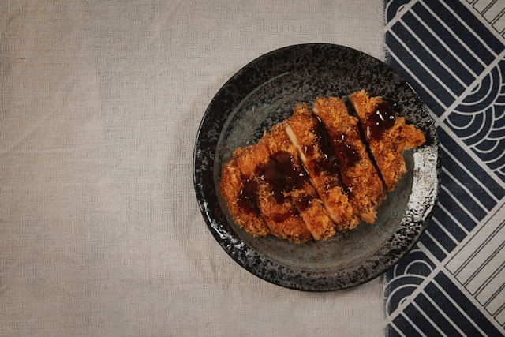

Home
Miso-glazed Salmon

Description
This miso-glazed salmon recipe delivers a restaurant-quality balance of
sweet, salty, and umami flavors. For best results, use
white miso for a milder, sweeter flavor.
Ingredients
- 4 fillets of center-cut salmon
- 1/4 cup miso paste
- 2 tablespoons of mirin
- 1 tablespoon of soy sauce
- 1 tablespoon of brown sugar
- 1 tablespoon of grated fresh ginger
Steps
-
In a small bowl whisk together miso paste, mirin, sugar and ginger until
smooth.
- Place salmon in a shallow dish and glaze.
- Marinate in refrigerator for 3 hours.
-
Pre-heat broiler to high and line a baking sheet with aluminum foil.
-
Place fillets on the sheet and bake for 6-10 minutes.
- Drizzle leftover glaze over cooked salmon and serve.